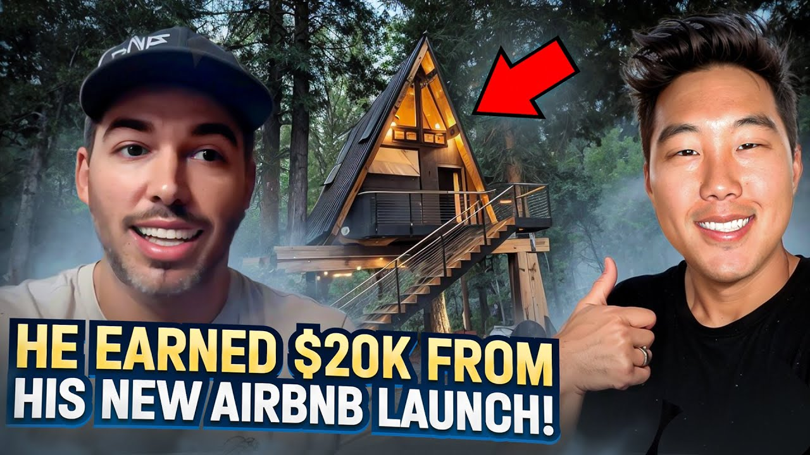

How Hampton Generated $20,000 in Airbnb Bookings His First Month (2026 Case Study)

Hampton earns $30,000+ in Airbnb bookings from a single lakefront property in just 4 months. Starting as a process engineer with zero real estate experience, he convinced his parents to let him manage their vacation home on Airbnb and generated $20,000 in bookings within weeks of going live. Now he's scaling to a West Virginia lodge projected to generate $100,000+ annually, all while working a demanding full-time job and raising two kids.
This case study breaks down exactly how Hampton built his Airbnb business, including his strategies for leveraging family properties, choosing the right markets, and automating operations to manage everything in just one hour per day.
In this article:
Quick Results: Hampton's Airbnb Numbers
| Metric | Value | Context |
|---|---|---|
| First Month Bookings | $20,000 | Within weeks of listing |
| 4-Month Total Bookings | $30,000+ | Lakefront property alone |
| Properties | 2 (3rd in progress) | Lakefront + West Virginia |
| Cash-on-Cash Return | 25-30% | West Virginia property |
| Projected Annual Revenue | $100,000+ | Once lodge complete |
| Time to First Property | Months of research | Methodical approach |
| Daily Management Time | 1 hour | Highly automated |
| Lodge Bedrooms | 7 bedrooms, 5 baths | One of the largest in the area |
Hampton's Background: From Engineer to Airbnb Entrepreneur
You don't need real estate experience to build a successful Airbnb business. Hampton is a process engineer at a consulting firm, and his wife works as a county lawyer. Together, they'd been discussing investment properties for years before finally taking the leap.
The Engineering Mindset
Hampton's background as a process engineer gave him a unique advantage in approaching the Airbnb business. Engineers are trained to analyze systems, optimize processes, and solve problems methodically. These skills translated directly to evaluating properties, setting up automation, and managing operations efficiently.
His consulting work also meant he understood the volatility of income. As he explained, there were periods when work slowed down, and if he didn't have work, he didn't get paid. This uncertainty was a major motivation for building additional income streams.
The Family Property Opportunity
The breakthrough came when Hampton realized his parents owned a lakefront property in Lake Gaston that sat unused on many weekends. Rather than looking for properties to lease or buy, he saw an opportunity right in front of him: partner with family to monetize an existing asset.
This approach eliminated many of the barriers that stop would-be Airbnb entrepreneurs. No lease to negotiate, no down payment required, no furniture to purchase from scratch. The property was already set up and ready for guests.
"I actually took some of the tools that you kind of provided with us that were like a lot so far as breaking down what to expect and stuff and I took that and showed them. I said look this is what it's a great property, we love being up there. But here's what you could make if we rented it on some of the weekends we're not there."
The Airbnb Journey: Hampton's Timeline
Years of Consideration: Taking the Leap of Faith
Situation: Hampton and his wife had discussed real estate investing for years but never took action.
Like many aspiring investors, Hampton and his wife spent years in analysis paralysis. They knew they wanted additional income streams but couldn't decide which business model to pursue. They researched everything from ATM machines to vending machines, but nothing felt like the right fit.
The turning point came during a slow period at Hampton's consulting job. With reduced hours and uncertain income, he realized they needed to act. He discovered Legacy Investing Show through YouTube, joined the Facebook group, and attended a seminar on short-term rentals.
"I really think I was talking with my wife and I was really thinking that was like we really need something like extra you know to help us kind of you know make it through anytime that way we're can be financially stable."
The appeal of short-term rentals was the automation potential. Unlike other side businesses that might require constant attention, Airbnb could be systematized. Hampton saw a path to income that wouldn't consume all his limited free time.
Mid-2023: First Property Goes Live
Situation: The lakefront property went live on Airbnb in June and immediately started booking.
After convincing his parents by showing them potential revenue projections, Hampton got to work setting up the Airbnb listing. Since the property was already furnished and ready, his main tasks were creating the listing, taking photos, setting up pricing, and establishing communication systems.
The initial setup took about two hours per day for the first week. Hampton was deliberately methodical, wanting to get everything right the first time. He set up the listing on Airbnb, configured his pricing tools, and established automated messaging for guests and cleaning crews.
The results exceeded expectations. Within weeks, the property had secured $20,000 in bookings. By the time of the interview (around October 2023), total bookings had reached $30,000 for the period from late June through September.
First Property Stats:
-
Location: Lake Gaston (lakefront)
-
Property Type: Vacation home (parents' property)
-
Time to First Booking: Within days of listing
-
First Month Bookings: $20,000
-
4-Month Total: $30,000+
Fall 2023: Scaling to West Virginia
Situation: Hampton purchased a property in West Virginia to diversify and scale his portfolio.
With the lakefront property generating consistent income, Hampton and his wife began looking for their next opportunity. They identified West Virginia's ATV country as a promising market. The area attracts outdoor enthusiasts who need places to park trailers and store ATVs.
This wasn't a simple purchase. Hampton found a property being sold by someone who already had an existing Airbnb operation. The deal included the lower half of a property with a garage apartment, the house next door, and two additional lots. This gave them space for guests' trailers and room to expand.
The purchase came in two phases:
Hampton's vision was to create one of the largest properties in the area. Once complete, "The Lodge" would offer sleeping capacity and amenities that competitors couldn't match.
How to Choose a Market for Vacation Rentals: Hampton's Strategy
The best market for Airbnb is one where you have familiarity, access, and can identify underserved guest needs. Hampton didn't chase trendy markets or highest-projected returns. He started with what he knew and expanded strategically.
Why Lakefront Properties Work
Lake Gaston was a natural choice for Hampton's first property because his family had been vacationing there for years. This familiarity provided several advantages:
Understanding Guest Needs: Hampton knew exactly what guests would want because he had been a guest himself. He understood the seasonal patterns, the local attractions, and the amenities that made a lakefront vacation special.
Comfort with Operations: Starting in a familiar location reduced the learning curve. He knew the area's contractors, understood local regulations, and could easily visit the property when needed.
Built-in Demand: Lakefront properties have inherent appeal. Guests seek waterfront access for swimming, boating, fishing, and the scenic views. This built-in demand creates a baseline of bookings that properties without waterfront access can't match.
However, Hampton also recognized the limitation: seasonality. The Lake Gaston property experiences slower winter months, requiring careful cash flow planning and filling the calendar during peak seasons to compensate for off-season dips.
The ATV Market Strategy: West Virginia
For the second property, Hampton took a different approach. Rather than replicating the lakefront model, he identified an underserved niche: ATV enthusiasts in West Virginia.
The Research Process:
-
Used AirDNA to analyze the West Virginia market
-
Identified strong demand from ATV/outdoor recreation travelers
-
Noticed that existing properties lacked adequate trailer parking
-
Found a property with space for trailers and room to expand
The key insight was understanding what these guests specifically needed. ATV enthusiasts travel with trailers. They need places to park those trailers, space to unload equipment, and proximity to trails. Many existing properties didn't cater to these requirements.
By purchasing extra lots alongside the main property, Hampton ensured he could offer what competitors couldn't: ample parking and storage for guests with trailers and ATVs.
"Using that information we knew what we could do, we knew what we could use that to back into what we wanted to put into the little house to start with to get it up and running."
Airbnb Strategies That Actually Work: Hampton's Playbook
The difference between profitable and struggling Airbnb operators often comes down to strategy. Hampton's success wasn't luck. He applied specific strategies that minimized risk and maximized returns.
Strategy 1: Family Property Partnership
What it is: Partnering with family members who own underutilized properties to create a win-win Airbnb arrangement.
Why it works: Family property partnerships eliminate many barriers to entry. There's no lease negotiation, no security deposits, no furniture to purchase, and trust is already established. The property owner gets income from an asset that would otherwise sit empty, while the operator gains access to a property without the typical startup costs.
Hampton's approach was particularly effective because he came prepared with data. He didn't just ask his parents if he could rent their place. He showed them exactly what they could earn, using tools and projections from Legacy Investing Show.
Hampton's Results with This Strategy:
-
Zero upfront investment for property access
-
Minimal setup costs (fire extinguisher, small safety items)
-
$20,000 in bookings within weeks
-
Family maintains use of property when desired
Strategy 2: Phased Property Development
What it is: Purchasing properties with multiple units or development potential, then bringing them online in phases to generate income while completing renovations.
Why it works: Real estate renovations take time and money. A phased approach means you can generate income from completed portions while still working on the rest. This income can fund ongoing renovations and reduce financial pressure.
Hampton's West Virginia purchase exemplifies this strategy. He bought a property with a garage apartment (the "little house") and a larger main house (the "big house"). The garage apartment required less renovation and could go live quickly. Meanwhile, he's taking his time with the larger house to create something exceptional.
Hampton's Results with This Strategy:
-
Little house generating $2,500/month while big house undergoes renovation
-
Projected 25-30% cash-on-cash return on little house alone
-
Big house projected to generate $75,000+ annually once complete
-
Combined property expected to exceed $100,000 annual revenue
Strategy 3: Automation from Day One
What it is: Setting up systems and technology from the start that allow you to manage properties remotely with minimal daily time investment.
Why it works: Without automation, managing even a single Airbnb property can become a second job. With Hampton working full-time as a process engineer and his wife as a lawyer, plus two kids with busy schedules, they had no extra time to spare. Automation wasn't optional; it was essential.
Hampton set up automated messaging for guests, automated notifications for cleaning crews, and dynamic pricing that adjusts without manual intervention. The result: managing two properties takes about one hour per day, mostly spent checking dashboards and handling exceptions.
Hampton's Results with This Strategy:
-
1 hour/day to manage two properties
-
Automated messages to cleaning crews on every booking
-
Reminder messages sent automatically before each turnover
-
Pricing adjustments happen without manual intervention
-
No scrambling to respond to guest inquiries
"Having a good team or having a good list of people to call in that general area that can help out and go address these issues, and all I have to do is send a message to somebody be like hey can you do you mind stepping over here I need you to check this out."
Hampton's Airbnb Results: The Numbers
Hampton generates $30,000+ in bookings from his lakefront property and is scaling to $100,000+ annually. Here's the complete financial breakdown of his Airbnb business.
Before vs. After Airbnb
| Metric | Before | After (4 Months) |
|---|---|---|
| Monthly Income Source | Engineering salary only | Salary + Airbnb income |
| Properties Managed | 0 | 2 (3rd in development) |
| Passive Income | $0 | $7,500+ average/month |
| Financial Security | Dependent on consulting work | Multiple income streams |
| Time Investment | Full work hours | 1 hour/day for properties |
Complete Financial Breakdown
Lake Gaston Property (Lakefront):
| Metric | Value | Notes |
|---|---|---|
| First Month Bookings | $20,000 | June-July 2023 |
| 4-Month Total | $30,000+ | June-October 2023 |
| Property Type | Lakefront vacation home | Family-owned |
| Startup Costs | Minimal | Fire extinguisher, safety items |
| Seasonality | Peak: Summer | Slower in winter months |
West Virginia Property (The Lodge):
| Metric | Little House | Big House (Projected) |
|---|---|---|
| Status | Live (Oct 2023) | Spring 2024 |
| First Month | $2,500 | $75,000+/year projected |
| Bedrooms | Apartment | 7 bedrooms, 5 baths |
| Cash-on-Cash | 25-30% | TBD |
| Combined Annual | $100,000+ projected |
Key Milestones Achieved
-
✅ $20,000 First Month: Lakefront property bookings exceeded expectations immediately
-
✅ $30,000 in 4 Months: Consistent booking performance through peak season
-
✅ Purchased Investment Property: West Virginia lodge acquired and Phase 1 live
-
✅ 25-30% Cash-on-Cash Return: Little house performing strongly
-
✅ 1 Hour/Day Management: Automation enables work-life balance
-
✅ Planning for $100K+ Annual: On track once lodge renovation complete
Airbnb Lessons: What Hampton Learned the Hard Way
These five lessons took Hampton from years of analysis paralysis to $30,000+ in bookings within months. Each one came from real experience and could save you significant time and stress.
"Sometimes you just got to take a leap of faith and take the risk and it's definitely panning out."
Lesson 1: Take the Leap Despite Fear
The Mistake: Waiting for perfect conditions or complete certainty before starting.
What Hampton Learned: Hampton and his wife discussed investing for years without taking action. They researched multiple business models, compared options endlessly, and always found reasons to wait. The breakthrough came when he realized there would never be a "perfect" time.
The slow period at his consulting job was actually the catalyst. With reduced income, the need became urgent. But more importantly, he finally recognized that continued waiting was its own form of decision.
Why This Matters: Most people who think about Airbnb never start. They research, plan, and analyze, but never list a property. Fear of the unknown keeps them stuck. Hampton was nervous too, but he started anyway.
"Been extremely nervous about it but sometimes you just got to take a leap of faith and take the risk and it's definitely panning out."
Lesson 2: Be Methodical in Your Approach
The Mistake: Rushing through setup to get listed faster, missing important details.
What Hampton Learned: As an engineer, Hampton's instinct was to be systematic and thorough. He spent about two hours per day for the first week getting his initial listing right. While this might seem slow, it paid dividends in fewer problems later.
He made sure photos were excellent, descriptions were complete, pricing was researched, and automation was configured before going live. This methodical approach meant the property started performing well immediately, rather than needing constant fixes.
Why This Matters: First impressions matter on Airbnb. A rushed listing with poor photos, incomplete information, or incorrect pricing will struggle to get bookings. Taking time upfront saves time and frustration later.
Lesson 3: Start with Familiar Markets
The Mistake: Chasing the "best" market based on projections alone, without any personal connection.
What Hampton Learned: Hampton's first property was in Lake Gaston, where his family had been vacationing for years. He knew the area, understood what guests would want, and felt comfortable with the operations. This familiarity reduced his learning curve significantly.
For his second property, he still chose strategically but within a region he could reasonably access and manage. The West Virginia ATV market wasn't random; it was based on research and proximity.
Why This Matters: Remote investing is possible, but it's harder for beginners. Starting in familiar territory builds confidence and skills that can later be applied to new markets.
Lesson 4: Use Data to Convince Stakeholders
The Mistake: Trying to convince family or partners with enthusiasm alone, without concrete projections.
What Hampton Learned: When Hampton approached his parents about managing their lakefront property, he didn't just explain the concept. He showed them specific numbers using tools from Legacy Investing Show and market data from AirDNA. This data-driven presentation turned a vague idea into a compelling opportunity.
His parents went from not realizing what their property could earn to actively supporting the venture. Data made the difference.
Why This Matters: Whether you're convincing family, partners, or landlords, numbers speak louder than promises. People need to see realistic projections based on actual market data, not just optimistic claims.
Lesson 5: Build Systems Before Scaling
The Mistake: Adding properties before you have the infrastructure to manage them efficiently.
What Hampton Learned: Despite having a demanding job, a lawyer spouse, and two kids, Hampton manages two properties in about an hour per day. This is only possible because he invested in automation from the start.
Automated messaging handles guest communication. Cleaning crews receive automatic notifications. Pricing tools adjust rates without intervention. These systems were in place before he added the second property.
Why This Matters: One property without systems is manageable. Two or three without systems becomes a second job. Build the infrastructure first, then scale.
Best Tools for Airbnb: Hampton's Tech Stack
Hampton manages two properties with minimal daily time using these tools. Here's the complete tech stack that powers his growing Airbnb business.
Essential Tools Overview
| Category | Tool | Purpose | Why Hampton Chose It |
|---|---|---|---|
| Property Management | Guesty | Central dashboard for all properties | Unified view of bookings and messages |
| Dynamic Pricing | PriceLabs | Automated rate optimization | Adjusts prices based on demand without manual work |
| Market Research | AirDNA | Data-driven property evaluation | Used to research West Virginia before purchasing |
| Guest Communication | Automated Messaging | Pre-written responses to common situations | Saves time and ensures consistent guest experience |
Guesty: Central Property Management
What it does: Provides a unified dashboard to manage all Airbnb properties, bookings, and communications from one place.
How Hampton uses it: Checks the dashboard daily to review bookings, confirm cleaning schedules, and monitor property performance. The centralized view means he doesn't need to log into multiple Airbnb accounts or platforms.
Pro tip: Set up the mobile app so you can check on properties from anywhere without being tied to a computer.
PriceLabs: Dynamic Pricing
What it does: Automatically adjusts nightly rates based on demand, seasonality, local events, and market conditions.
How Hampton uses it: Sets base parameters and lets the algorithm handle day-to-day pricing decisions. This is especially important for the seasonal lakefront property, where rates need to fluctuate significantly between peak summer and off-season winter months.
Pro tip: Review the pricing tool's recommendations weekly initially to understand its logic, then trust it to run independently.
AirDNA: Market Research
What it does: Provides data on Airbnb market performance including average daily rates, occupancy, and revenue potential by area.
How Hampton uses it: Used AirDNA to evaluate the West Virginia ATV market before purchasing. The data showed demand patterns, identified what amenities successful properties offered, and confirmed the market opportunity.
Pro tip: Don't just look at averages. Study the top-performing properties to understand what makes them successful.
Automated Messaging System
What it does: Sends pre-written messages to guests and cleaning crews based on booking events (new booking, check-in approaching, checkout complete, etc.).
How Hampton uses it: Every new booking triggers an automatic message to the cleaning crew with dates and property details. A second message goes out closer to the turnover date as a reminder. Guests receive check-in instructions, welcome messages, and checkout reminders automatically.
Pro tip: Build in buffer time by sending cleaning reminders a day before rather than the day of turnovers.
Hampton's Advice for Airbnb Beginners
"It's going to be scary it's going to be very intimidating because there's going to be a lot of things that you think you don't know but if you take the time you be patient do your research look at different things look several look just do your research."
If Hampton were starting over today, here's exactly what he would do:
Step 1: Commit to Research Before Action (Week 1-4)
Hampton spent months researching before making his move. He doesn't regret this time; it gave him confidence and prevented costly mistakes. His specific recommendations:
Evaluate Multiple Options: Don't jump on the first opportunity. Look at different markets, property types, and business models. Understanding the landscape helps you make better decisions.
Take Courses and Training: Hampton credits Legacy Investing Show with providing the fundamentals and tools he needed. Formal training accelerates learning and provides frameworks you won't discover on your own.
Use Data, Not Gut Feelings: AirDNA and similar tools provide objective information about markets. Use them to validate assumptions rather than relying on intuition alone.
Step 2: Be Patient and Methodical (Week 5-8)
Rushing leads to mistakes. Hampton was deliberate about every step of his process:
Property Evaluation: Don't buy (or commit to) the first property you find. Analyze multiple options against your criteria.
Listing Setup: Spend the time to create a complete, professional listing. Poor photos and incomplete descriptions cost bookings.
Systems Configuration: Get automation working before you go live. It's much easier to configure systems calmly than while managing active bookings.
Step 3: Then Commit Fully
After research and preparation, the time comes to act. Hampton's final advice is about commitment:
Make the Decision: At some point, more research doesn't help. You have to commit and learn by doing.
Accept Imperfection: Your first property won't be perfect. Neither was Hampton's. The goal is to get started and improve over time.
Trust the Process: If you've done the research and followed proven strategies, trust that it will work out. Hampton was nervous but took the leap anyway.
"Make sure you take the time be methodical in your evaluation and then and then just commit to it."
Watch Hampton's Full Interview
Video highlights:
-
0:00 - Introduction and background
-
3:30 - Why Hampton chose Airbnb over other businesses
-
8:15 - Getting started with family property
-
12:00 - First month results: $20,000 in bookings
-
16:30 - West Virginia lodge purchase strategy
-
21:00 - Balancing Airbnb with full-time job and family
-
25:00 - Tools and automation setup
-
28:00 - Advice for beginners
Frequently Asked Questions
How much money can you really make with Airbnb arbitrage?
Hampton's results demonstrate the potential: $20,000 in bookings within weeks of listing, growing to $30,000+ in just four months from a single lakefront property. His West Virginia property added another $2,500 in its first month with the smaller unit alone.
The key factors affecting income include property type, location, seasonality, and how well you optimize listings and pricing. Hampton's lakefront property performs strongly in summer but slows in winter, which he plans for by maximizing bookings during peak season.
Is Airbnb arbitrage still worth it in 2026?
Based on Hampton's recent experience starting in mid-2023 and continuing to scale, the fundamentals remain strong for operators who execute well. His success came from choosing the right markets (lakefront vacation destination, ATV country), targeting underserved guest needs (trailer parking for ATV enthusiasts), and implementing proper automation.
The market has matured, which means generic listings struggle. But properties with unique features, strong amenities, and professional management continue to thrive.
What's the biggest risk with Airbnb vacation rentals?
Hampton identifies seasonality as a primary concern, especially for his lakefront property. Summer months generate strong bookings, but winter is slow. He manages this by maximizing peak season performance and planning cash flow carefully to cover off-season expenses.
Other risks include property damage, difficult guests, and changing regulations. Hampton mitigates these through proper guest screening, clear house rules, and choosing markets with favorable short-term rental policies.
Start Your Airbnb Journey
Ready to build your own Airbnb business like Hampton?
Learn more about Legacy Investing Show
Related Success Stories
Helpful Resources
About Legacy Investing Show
Legacy Investing Show is Preston Seo's comprehensive Airbnb arbitrage training program. Since founding, the program has:
-
Trained 2,000+ students across the United States
-
Generated $10M+ in cumulative student revenue
-
Built an active community of short-term rental investors
-
Produced numerous students earning $10K+/month
Preston Seo created Legacy Investing Show to teach the exact systems that scaled his business, providing the mentorship, scripts, and community that accelerate success.
blog resources | Watch free training
This case study is based on Hampton's video interview conducted in October 2023. All statistics and quotes are directly from Hampton's experience. Individual results vary based on market, effort, and capital invested.
Last updated: February 22, 2026
Preston Seo
Real estate investor and financial educator helping people build generational wealth through smart investing strategies.
Frequently Asked Questions
How much money can you make with Airbnb arbitrage?
Hampton generated $20,000 in bookings within weeks of listing his first property and reached $30,000 in bookings within 4 months. His second property in West Virginia generated $2,500 in its first month. He projects $100,000+ annually once his full lodge property is complete.
Is Airbnb arbitrage still profitable in 2026?
Yes. Hampton started mid-2023 and scaled to $30,000+ in bookings within 4 months from a single lakefront property. His success demonstrates that choosing the right market, property type, and automation tools can generate substantial income even for complete beginners.
Can you start Airbnb arbitrage with a family property?
Yes. Hampton used his parents' lakefront property to start his Airbnb business. By presenting them with data on potential earnings using AirDNA and Legacy Investing Show tools, he convinced them to let him manage the property on weekends they weren't using it.
How long does it take to set up an Airbnb property?
Hampton spent about 2 hours per day for the first week setting up his initial property on Airbnb. He was methodical about getting everything right, including photos, descriptions, and automated messaging. After the initial setup, he manages both properties in about 1 hour per day.
What is the best market for Airbnb vacation rentals?
Hampton chose a lakefront property in Lake Gaston for its familiarity and tourist appeal. His second property targets the ATV/outdoor recreation market in West Virginia. The best market depends on your access, experience, and the property's unique features.
Do you need experience to start Airbnb arbitrage?
No. Hampton is a process engineer with no prior real estate experience. His wife is a county lawyer. They started their Airbnb business using Legacy Investing Show's training and tools, generating $20,000 in their first month.
What is the cash-on-cash return for Airbnb arbitrage?
Hampton's West Virginia property is projecting a 25-30% cash-on-cash return for the smaller apartment unit alone. The larger lodge, once complete, is expected to generate $75,000+ per year, with total property revenue exceeding $100,000 annually.
Is Legacy Investing Show worth it?
Based on Hampton's results, the program provided the foundational knowledge, tools, and confidence to start. He credits the courses with teaching him the fundamentals and providing evaluation tools that helped him convince his parents to let him manage their property.
How do you manage Airbnb properties while working full-time?
Hampton works as a process engineer while his wife is a county lawyer. They have two kids with busy schedules. He manages both Airbnb properties in about 1 hour per day using automation tools like Guesty, PriceLabs, and automated messaging for cleaning crews.
What tools does Hampton use to manage his Airbnb properties?
Hampton uses Guesty for property management, PriceLabs for dynamic pricing, AirDNA for market research, and automated messaging systems to coordinate with cleaning crews. These tools allow him to manage multiple properties with minimal daily time investment.